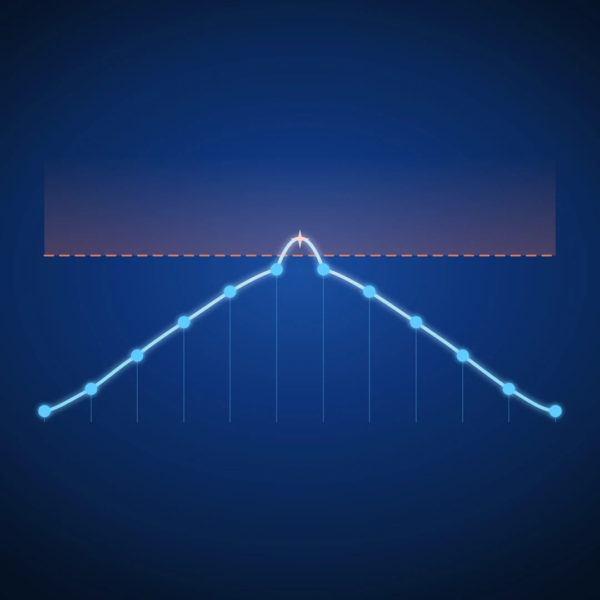

You bounced the master at −1.0 dBFS. Your DAW's peak meter agreed. You uploaded to Spotify, listened on your phone, and heard a flat little crackle on the loud bits.
You're not alone. Most engineers shipping tracks in the last decade have run into the same thing. The peak meter wasn't wrong — it just wasn't watching the right signal.
This article covers what true peak actually measures, why it disagrees with the sample peak your DAW shows by default, and how to use a true peak meter without overthinking it.
The two numbers your peak meter could mean
Every digital audio file is a list of samples — 44,100 or 48,000 per second, each one a single number. When your DAW shows "peak," it almost always means the loudest single sample in that list.
That number is real. It is also incomplete.
A digital audio file is not the sound. The sound is what comes out when a converter — a D/A on your interface, or the resampling and decoding inside a phone, a streaming codec, or a Bluetooth chip — reconstructs a continuous waveform from those samples. Between any two samples, the actual analog waveform can rise higher than either sample on its own. That higher value is the true peak, also called the inter-sample peak.
Sample peak is what's in the file. True peak is what comes out of the speaker.
When they disagree, true peak wins — because true peak is what your listener hears.
Why the gap exists
The gap is a property of how digital audio reconstructs analog. The Nyquist–Shannon sampling theorem guarantees you can recover the original waveform from samples, but "recover" means draw a smooth curve through the dots — and a smooth curve through dots can swing higher than the dots themselves between them.
In practice, this happens whenever a signal has been pushed hard enough that successive samples sit near the ceiling. A limiter that clamps every sample to −0.1 dBFS does not clamp the reconstructed waveform to −0.1 dBFS. The reconstruction can peek over 0 dBFS by a few tenths of a dB, sometimes more.
A few rules of thumb that hold up in the field:
- Hot, limited material in modern pop and EDM regularly shows true peaks 0.5 to 2 dB above its sample peak.
- Sparse material with long inter-sample distances — kick drums, plucked sounds, isolated transients — tends toward the higher end of that range.
- Material that hasn't been pushed against a ceiling — orchestral, jazz, ambient — almost never has a meaningful true peak / sample peak gap.
The gap is not a flaw in your converter or your DAW. It is a structural feature of sampled audio.
Where the gap turns into clipping
Three places, in order of how often they bite:
1. Lossy codecs
AAC, MP3, and Opus encode in the frequency domain and decode back to PCM. The decoded PCM is not sample-identical to your master. Levels shift, sometimes upward. A −0.3 dBFS sample-peak master can decode to a +0.4 dBTP playback signal, and the downstream chain clips.
2. Sample rate conversion
Streaming services normalize loudness and may resample. Both steps can lift true peak relative to what you handed them.
3. Consumer playback chains
Phone DACs, Bluetooth codecs, and laptop converters often have less headroom than your studio interface and no protective limiter on the output. Anything over 0 dBTP on the way in is anyone's guess on the way out.
This is why streaming platforms publish a true peak ceiling in their delivery specs. They have measured the round trip.
What the streaming platforms ask for
The currently published targets, abbreviated:
| Platform | True Peak Ceiling | Loudness Reference |
|---|---|---|
| Spotify | −1.0 dBTP | −14 LUFS |
| Apple Music | −1.0 dBTP | −16 LUFS (Sound Check) |
| YouTube | −1.0 dBTP | −14 LUFS |
| Tidal | −1.0 dBTP | −14 LUFS |
| Amazon Music | −2.0 dBTP | −14 LUFS |
The numbers shift over time and vary by program type — podcast specs differ from music. The pattern does not shift: everyone wants a true peak ceiling below 0 dBFS, with a comfortable margin for codec recovery.
A −1.0 dBTP ceiling is the safe default across the board. −2.0 dBTP costs almost nothing perceptually and removes the question entirely.
What a true peak meter actually does
A true peak meter does not measure your file. It measures a reconstruction of your file — an oversampled, interpolated estimate of what the analog signal between your samples would look like.
The ITU-R BS.1770 standard defines the reference implementation: 4× oversample (or higher), apply a polyphase interpolation filter, then read the peak of the upsampled stream. That gives a value within tenths of a dB of the real inter-sample peak.
Real meters do this in real time, which is why a true peak readout costs a little more CPU than a sample peak readout. It is worth it.
Dedicated metering plugins — Youlean Loudness Meter, iZotope Insight, MeldaProduction MMultiAnalyzer — show the true peak reading alongside the sample peak. Keeping both on screen at once is how the difference between them stops being theoretical: if sample peak reads −1.0 and true peak reads −0.2 on the same passage, that is the codec margin you do not have.
How to read it without overthinking it
A common mistake is treating true peak as a separate measurement that lives only in mastering. It does not have to.
A workable workflow:
- Set a true peak ceiling. −1.0 dBTP is fine. −2.0 dBTP is safer.
- Use a true-peak-aware limiter at the end of your master chain. FabFilter Pro-L 2, Waves L2 Ultramaximizer, iZotope Ozone Maximizer, and most stock DAW limiters all have a true peak mode. It costs CPU and a small amount of latency. Use it.
- Read true peak, not sample peak, when checking whether you're done. If the limiter is set to −1.0 dBTP, the meter should be reading at or under −1.0 dBTP at the loudest moment of the track.
- Ignore the sample peak number unless you're debugging. Sample peak is the file's number. True peak is the listener's number. You are shipping for the listener.
That is most of it. The rest is taste.
What about during mixing?
A true peak meter on the master bus during a mix is mostly informational. You are not committing the limiter ceiling there. The useful version of "true peak during mixing" is headroom: how much margin do you have before the master limiter has to work hard to bring the track to its true peak ceiling?
For most pop and rock work, if the mix bus is averaging around −10 dBFS sample peak with peaks around −3 to −1 dBFS, there is enough headroom for a master limiter to do its job and keep the result under −1.0 dBTP. Looser than that and the limiter is doing more shaping than catching.
Inter-sample issues at the mix stage are rare unless something is being driven into a soft clipper or a saturator without oversampling — also worth checking, but that is a different article.
Tonal balance is the other thing the meter sees
While we are on it: the same metering chain that gives you true peak also gives you everything else — LUFS short-term and integrated, RMS, peak/RMS as a dynamics readout, stereo correlation, and the frequency-band energy split called tonal balance.
Tonal balance is the long-window read of how energy distributes across low, mid, and high bands relative to a reference. It catches the bass-heavy mix on a small monitor, the brittle top end on a hot day, the dark master that translates worse than expected. We will come back to it in its own article.
The short version
- Sample peak is the loudest sample in the file.
- True peak is the loudest point in the reconstructed analog waveform.
- They disagree, sometimes by 1–2 dB.
- Codecs, resamplers, and consumer playback chains turn that disagreement into audible clipping.
- Streaming platforms ask for −1.0 dBTP or lower. Honor it.
- Use a true-peak-aware limiter and read the true peak meter when checking the master.
- Sample peak is for debugging. True peak is the number that ships.
A meter that shows you both side by side is the cheapest way to never wonder again why the upload sounded worse than the bounce.
Ready to check your own master? Try the Mix Analyzer — a free browser-based tool that measures loudness, true peak, dynamics, stereo image, and tonal balance.
← Back to Articles ↑ Back to Top